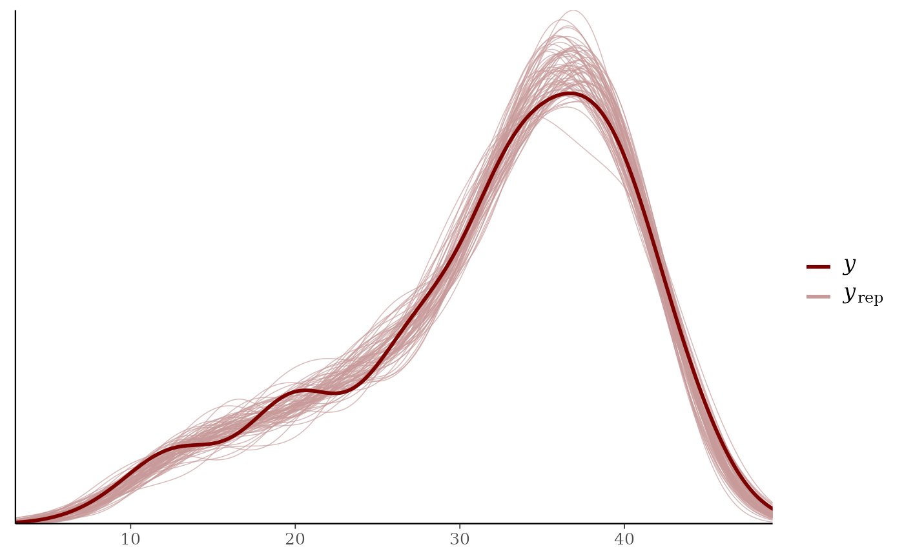
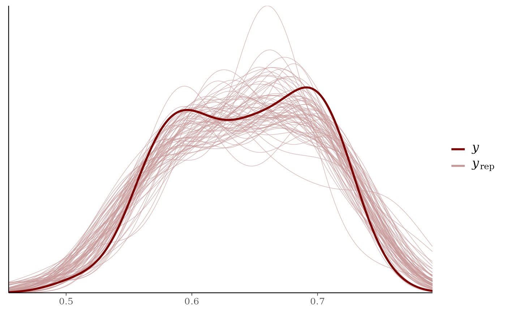
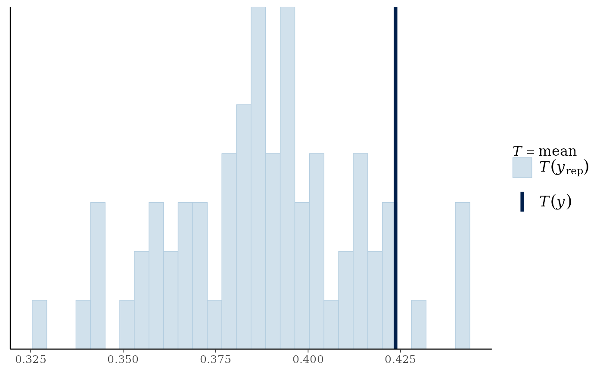
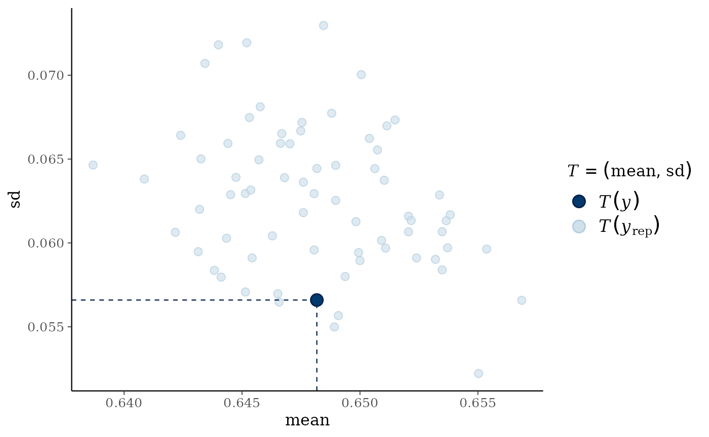
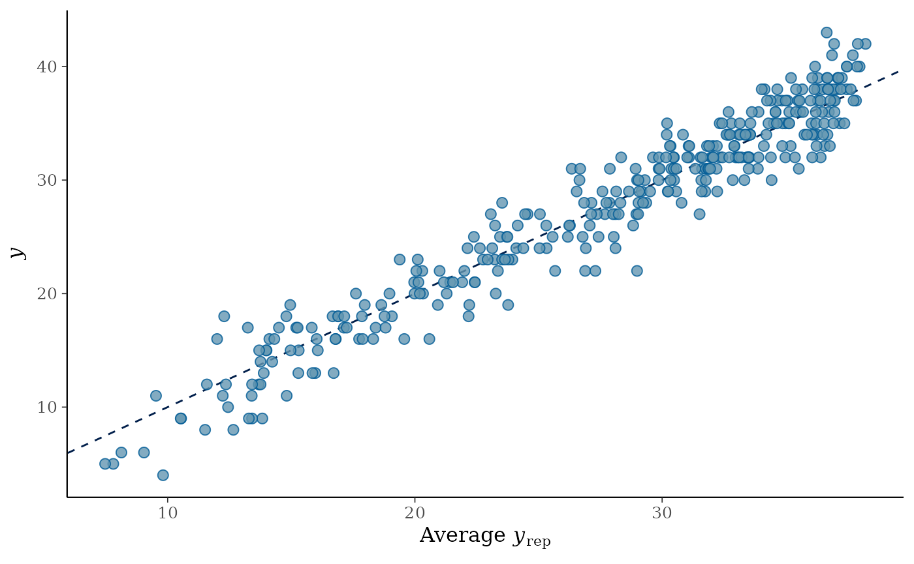
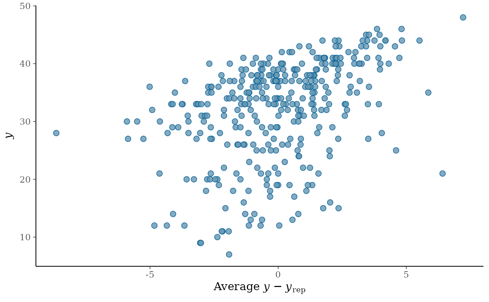

class_0 <- sample(1:2^K, N, replace = L)
Alphas_0 <- matrix(0,N,K)
for(i in 1:N){
Alphas_0[i,] <- inv_bijectionvector(K,(class_0[i]-1))
}
thetas_true = rnorm(N)
lambdas_true = c(-1, 1.8, .277, .055)
Alphas <- sim_alphas(model="HO_sep",
lambdas=lambdas_true,
thetas=thetas_true,
Q_matrix=Q_matrix,
Design_array=Design_array)
table(rowSums(Alphas[,,5]) - rowSums(Alphas[,,1])) # used to see how much transition has taken place
#>
#> 0 1 2 3 4
#> 38 36 98 134 44
itempars_true <- matrix(runif(J*2,.1,.2), ncol=2)
Y_sim <- sim_hmcdm(model="DINA",Alphas,Q_matrix,Design_array,
itempars=itempars_true)
output_HMDCM = hmcdm(Y_sim,Q_matrix,"DINA_HO",Test_order = Test_order, Test_versions = Test_versions,
chain_length=100,burn_in=30,
theta_propose = 2,deltas_propose = c(.45,.35,.25,.06))
#> 0
output_HMDCM = hmcdm(Y_sim,Q_matrix,"DINA_HO",Design_array,
chain_length=100,burn_in=30,
theta_propose = 2,deltas_propose = c(.45,.35,.25,.06))
#> 0
output_HMDCM
#>
#> Model: DINA_HO
#>
#> Sample Size: 350
#> Number of Items:
#> Number of Time Points:
#>
#> Chain Length: 100, burn-in: 30
summary(output_HMDCM)
#>
#> Model: DINA_HO
#>
#> Item Parameters:
#> ss_EAP gs_EAP
#> 0.2520 0.08206
#> 0.1631 0.09177
#> 0.1298 0.04727
#> 0.1353 0.25609
#> 0.1744 0.10868
#> ... 45 more items
#>
#> Transition Parameters:
#> lambdas_EAP
#> λ0 -1.2546
#> λ1 2.0857
#> λ2 0.2265
#> λ3 0.1126
#>
#> Class Probabilities:
#> pis_EAP
#> 0000 0.1160
#> 0001 0.2420
#> 0010 0.1855
#> 0011 0.2251
#> 0100 0.1634
#> ... 11 more classes
#>
#> Deviance Information Criterion (DIC): 18777.65
#>
#> Posterior Predictive P-value (PPP):
#> M1: 0.5194
#> M2: 0.49
#> total scores: 0.6248
a <- summary(output_HMDCM)
a$ss_EAP
#> [,1]
#> [1,] 0.25202032
#> [2,] 0.16308108
#> [3,] 0.12975238
#> [4,] 0.13533598
#> [5,] 0.17435657
#> [6,] 0.11859239
#> [7,] 0.16375238
#> [8,] 0.11211662
#> [9,] 0.23754291
#> [10,] 0.15029122
#> [11,] 0.08215284
#> [12,] 0.14525965
#> [13,] 0.17590272
#> [14,] 0.20762256
#> [15,] 0.16581490
#> [16,] 0.11977483
#> [17,] 0.20186422
#> [18,] 0.18503103
#> [19,] 0.10637845
#> [20,] 0.24455163
#> [21,] 0.09503066
#> [22,] 0.22504420
#> [23,] 0.11284022
#> [24,] 0.11865820
#> [25,] 0.11723847
#> [26,] 0.12452072
#> [27,] 0.19777361
#> [28,] 0.14364488
#> [29,] 0.16326090
#> [30,] 0.17115290
#> [31,] 0.18365025
#> [32,] 0.20026030
#> [33,] 0.23687610
#> [34,] 0.19927063
#> [35,] 0.21132610
#> [36,] 0.18015845
#> [37,] 0.15709323
#> [38,] 0.11911711
#> [39,] 0.18814074
#> [40,] 0.12920596
#> [41,] 0.16951280
#> [42,] 0.11530500
#> [43,] 0.13441859
#> [44,] 0.21601335
#> [45,] 0.21375155
#> [46,] 0.19627906
#> [47,] 0.17936273
#> [48,] 0.07822568
#> [49,] 0.20148441
#> [50,] 0.19942209
a$lambdas_EAP
#> [,1]
#> λ0 -1.2546357
#> λ1 2.0856891
#> λ2 0.2265389
#> λ3 0.1125531
mean(a$PPP_total_scores)
#> [1] 0.6265224
mean(upper.tri(a$PPP_item_ORs))
#> [1] 0.49
mean(a$PPP_item_means)
#> [1] 0.5365714
a$DIC
#> Transition Response_Time Response Joint Total
#> D_bar 2037.680 NA 14707.71 1229.727 17975.12
#> D(theta_bar) 1771.676 NA 14219.15 1181.760 17172.58
#> DIC 2303.684 NA 15196.27 1277.695 18777.65
head(a$PPP_total_scores)
#> [,1] [,2] [,3] [,4] [,5]
#> [1,] 0.40000000 0.8142857 0.5571429 0.3857143 0.8428571
#> [2,] 0.95714286 0.5428571 0.7857143 0.6285714 1.0000000
#> [3,] 0.82857143 0.1571429 0.1714286 0.5000000 0.9571429
#> [4,] 0.57142857 0.8714286 0.7857143 0.6857143 1.0000000
#> [5,] 0.07142857 0.4285714 0.4142857 0.2571429 0.8142857
#> [6,] 0.98571429 0.5285714 0.4857143 0.9142857 0.8571429
head(a$PPP_item_means)
#> [1] 0.5857143 0.4714286 0.5000000 0.4857143 0.5142857 0.4571429
head(a$PPP_item_ORs)
#> [,1] [,2] [,3] [,4] [,5] [,6] [,7]
#> [1,] NA 0.2714286 0.6428571 0.5857143 0.4000000 0.7428571 0.41428571
#> [2,] NA NA 0.2857143 0.7714286 0.4142857 0.4142857 0.27142857
#> [3,] NA NA NA 0.8428571 0.4142857 0.7285714 0.42857143
#> [4,] NA NA NA NA 0.7714286 0.8285714 0.42857143
#> [5,] NA NA NA NA NA 0.4142857 0.75714286
#> [6,] NA NA NA NA NA NA 0.08571429
#> [,8] [,9] [,10] [,11] [,12] [,13] [,14]
#> [1,] 0.4000000 0.8285714 0.7000000 0.60000000 0.6142857 0.7428571 0.57142857
#> [2,] 0.3714286 0.3714286 0.8428571 0.88571429 0.7000000 0.3000000 0.75714286
#> [3,] 0.6142857 0.4142857 0.2428571 0.02857143 0.3714286 0.7857143 0.82857143
#> [4,] 0.9285714 0.4000000 0.6714286 0.40000000 0.9714286 0.5714286 0.44285714
#> [5,] 0.5857143 0.8142857 0.6571429 0.27142857 0.8142857 0.4142857 0.28571429
#> [6,] 0.9142857 0.5285714 0.3285714 0.80000000 0.3000000 0.1714286 0.08571429
#> [,15] [,16] [,17] [,18] [,19] [,20] [,21]
#> [1,] 0.5428571 0.52857143 0.2714286 0.7428571 0.5857143 0.3428571 0.6714286
#> [2,] 0.6142857 0.11428571 0.3571429 0.9142857 0.4714286 0.5571429 0.6142857
#> [3,] 0.7714286 0.75714286 0.9571429 0.4857143 0.7571429 0.3571429 0.9000000
#> [4,] 0.6857143 0.44285714 0.3428571 0.6142857 0.9714286 0.9142857 0.7285714
#> [5,] 0.7142857 0.44285714 0.6714286 0.7000000 0.5714286 0.7000000 0.6857143
#> [6,] 0.2285714 0.02857143 0.2142857 0.6142857 0.6285714 0.7857143 0.9428571
#> [,22] [,23] [,24] [,25] [,26] [,27] [,28]
#> [1,] 0.7571429 0.7571429 0.4571429 0.84285714 0.8000000 0.7428571 0.57142857
#> [2,] 0.3285714 0.7857143 0.1142857 0.05714286 0.3571429 0.7714286 0.07142857
#> [3,] 0.2714286 0.4285714 0.9142857 0.47142857 0.0000000 0.3714286 0.61428571
#> [4,] 0.4571429 0.6285714 0.6000000 0.50000000 0.5571429 0.6571429 0.51428571
#> [5,] 0.1142857 0.8142857 0.6714286 0.90000000 0.6571429 0.2000000 0.81428571
#> [6,] 0.1428571 0.4571429 0.9000000 0.61428571 0.6428571 0.8000000 0.34285714
#> [,29] [,30] [,31] [,32] [,33] [,34] [,35]
#> [1,] 0.9571429 0.6857143 0.6285714 0.1571429 0.8571429 0.9142857 0.14285714
#> [2,] 0.2571429 0.3142857 0.2142857 0.1857143 0.4142857 0.4857143 0.04285714
#> [3,] 0.6571429 0.9428571 0.5142857 0.2428571 0.2571429 0.5571429 0.95714286
#> [4,] 0.5142857 0.6857143 0.3714286 0.1285714 0.3142857 0.6142857 0.44285714
#> [5,] 0.8000000 0.2714286 0.1285714 0.3571429 0.7714286 0.9000000 0.44285714
#> [6,] 0.6571429 0.3000000 0.1142857 0.6142857 0.8857143 0.5285714 0.42857143
#> [,36] [,37] [,38] [,39] [,40] [,41] [,42]
#> [1,] 0.4857143 0.3142857 0.02857143 0.3571429 0.1000000 0.3285714 0.3000000
#> [2,] 0.9571429 0.3285714 0.34285714 0.7000000 0.5714286 0.1285714 0.7571429
#> [3,] 0.1285714 0.1857143 0.45714286 0.3428571 0.3571429 0.7285714 0.6571429
#> [4,] 0.8285714 0.9000000 0.64285714 0.8142857 0.5285714 0.8714286 0.4714286
#> [5,] 0.1714286 0.3428571 0.25714286 0.4571429 0.2428571 0.6285714 0.4857143
#> [6,] 0.9571429 0.2571429 0.10000000 0.8000000 0.2857143 0.8142857 0.6857143
#> [,43] [,44] [,45] [,46] [,47] [,48] [,49]
#> [1,] 0.7285714 0.4428571 0.8142857 0.8285714 0.0000000 0.24285714 0.5714286
#> [2,] 0.2428571 0.3285714 0.7571429 0.1000000 0.1714286 0.08571429 0.6714286
#> [3,] 0.5714286 0.6428571 0.8714286 0.1428571 0.7571429 0.47142857 0.8000000
#> [4,] 0.7428571 0.8285714 1.0000000 0.7428571 0.3000000 0.62857143 0.4285714
#> [5,] 0.9142857 0.8857143 0.9571429 0.8142857 0.4142857 0.81428571 0.8142857
#> [6,] 0.5571429 0.2714286 0.9000000 0.5285714 0.2428571 0.31428571 0.4714286
#> [,50]
#> [1,] 0.5714286
#> [2,] 0.7285714
#> [3,] 0.3428571
#> [4,] 0.9285714
#> [5,] 0.9428571
#> [6,] 0.9428571
library(bayesplot)
#> This is bayesplot version 1.14.0
#> - Online documentation and vignettes at mc-stan.org/bayesplot
#> - bayesplot theme set to bayesplot::theme_default()
#> * Does _not_ affect other ggplot2 plots
#> * See ?bayesplot_theme_set for details on theme setting
pp_check(output_HMDCM)
pp_check(output_HMDCM, plotfun="dens_overlay", type="item_mean")
pp_check(output_HMDCM, plotfun="hist", type="item_OR")
#> Note: in most cases the default test statistic 'mean' is too weak to detect anything of interest.
#> `stat_bin()` using `bins = 30`. Pick better value `binwidth`.
pp_check(output_HMDCM, plotfun="stat_2d", type="item_mean")
#> Note: in most cases the default test statistic 'mean' is too weak to detect anything of interest.
pp_check(output_HMDCM, plotfun="scatter_avg", type="total_score")
pp_check(output_HMDCM, plotfun="error_scatter_avg", type="total_score")
Checking convergence of the two independent MCMC chains with
different initial values using coda package.
# output_HMDCM1 = hmcdm(Y_sim, Q_matrix, "DINA_HO", Design_array,
# chain_length=100, burn_in=30,
# theta_propose = 2, deltas_propose = c(.45,.35,.25,.06))
# output_HMDCM2 = hmcdm(Y_sim, Q_matrix, "DINA_HO", Design_array,
# chain_length=100, burn_in=30,
# theta_propose = 2, deltas_propose = c(.45,.35,.25,.06))
#
# library(coda)
#
# x <- mcmc.list(mcmc(t(rbind(output_HMDCM1$ss, output_HMDCM1$gs, output_HMDCM1$lambdas))),
# mcmc(t(rbind(output_HMDCM2$ss, output_HMDCM2$gs, output_HMDCM2$lambdas))))
#
# gelman.diag(x, autoburnin=F)